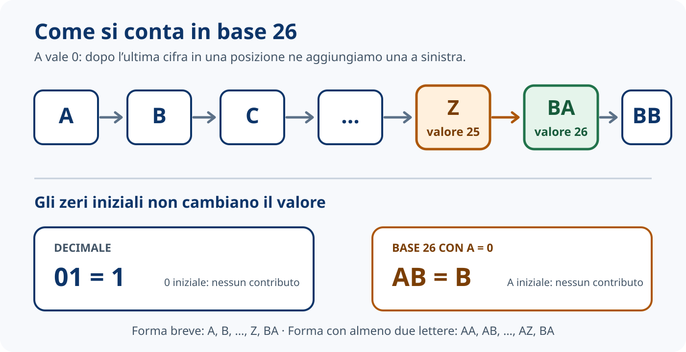
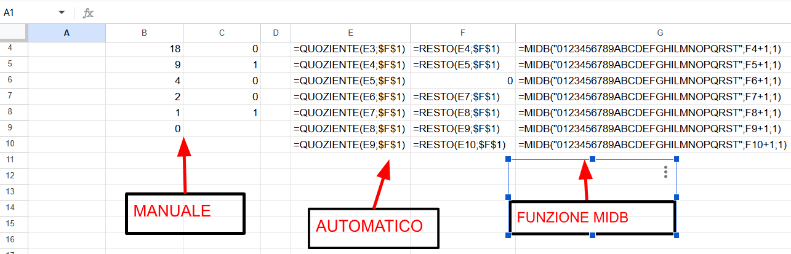

Divisore
È la base scelta: 2 per il binario, 8 per l’ottale, 16 per l’esadecimale.
Approfondimento · Modulo 3.1
Dalla conversione binaria alle cifre rappresentate con lettere: un algoritmo, tante basi.
Esperienza di laboratorio
Nella Lezione 3.02 siamo partiti dalle conversioni manuali da decimale a binario. Poi abbiamo affidato a Google Fogli le divisioni successive usando QUOZIENTE, RESTO e i riferimenti alle celle.
Quando la base è diventata un dato contenuto in una cella, lo stesso algoritmo ha iniziato a funzionare anche con basi diverse. In laboratorio abbiamo sperimentato questa idea fino alla base 16 e abbiamo usato una funzione di estrazione per trasformare ogni resto nel simbolo della cifra corrispondente.
A · Un algoritmo, tante basi
Nelle divisioni successive cambiano soltanto il divisore, i possibili valori dei resti e i simboli usati per rappresentarli.
È la base scelta: 2 per il binario, 8 per l’ottale, 16 per l’esadecimale.
Vanno sempre da 0 fino a base − 1. In base 16 vanno quindi da 0 a 15.
Da 0 a 9 bastano le cifre consuete; per i valori da 10 a 15 usiamo A, B, C, D, E e F.
Il resto 15 si rappresenta con il simbolo F.
Anche questo resto corrisponde a F.
Otteniamo 25510 = FF16.
B · Le cifre sono simboli
In laboratorio abbiamo costruito l’alfabeto delle cifre usando prima le cifre decimali, da 0 a 9, e poi le lettere dell’alfabeto italiano tradizionale. In questo modo avevamo a disposizione simboli sufficienti per rappresentare anche i resti maggiori di 9.
| Decimale | Base 21 | Base 26 |
|---|---|---|
| 0 | A | A |
| 1 | B | B |
| 20 | Z | U |
| 21 | BA | V |
| 25 | BE | Z |
| 26 | BF | BA |
| 27 | BG | BB |
Abbiamo cambiato algoritmo oppure soltanto la base e l’alfabeto delle cifre?
Significa riconoscere la struttura comune di problemi diversi. Qui separiamo l’algoritmo, che resta uguale, dai dati che possono cambiare: la base e l’alfabeto delle cifre.
Una cifra è un simbolo usato per rappresentare un valore. Nel sistema decimale usiamo dieci simboli, da 0 a 9; in quello esadecimale ne usiamo sedici, aggiungendo le lettere da A a F.
Possiamo anche definire un sistema in base 26 che usa soltanto le lettere dell’alfabeto inglese:
BASE = 26
ALFABETO = ABCDEFGHIJKLMNOPQRSTUVWXYZ
A = 0 B = 1 C = 2 ... Z = 25Ogni sistema posizionale ha bisogno di una cifra per lo zero: serve a indicare che una posizione non contribuisce al valore. Nella convenzione scelta assegniamo questo ruolo ad A. Così abbiamo esattamente 26 cifre, con valori da 0 a 25.
C · Come si conta utilizzando le lettere?
Usando la rappresentazione convenzionale più breve, la sequenza è A, B, C, …, Z, BA, BB, BC, …. Dopo aver usato tutte le 26 cifre in una posizione, ne serve una nuova a sinistra.

Perché A vale zero. Scrivere una A iniziale non cambia il valore, proprio come aggiungere uno zero davanti a un numero decimale:
1 = 01 = 001
Gli zeri iniziali non cambiano il valore.
B = AB = AAB
Le A iniziali rappresentano zeri non significativi.
Quindi AA = 0, AB = 1, AZ = 25 e BA = 26. Se decidiamo di mostrare sempre almeno due lettere, la sequenza appare come AA, AB, AC, …, AZ, BA, BB, …; è la stessa successione di valori, soltanto completata a sinistra.
D · Il valore dipende dalla posizione
Le due posizioni funzionano come le unità e le decine del sistema decimale, ma ogni passaggio vale 26 volte la posizione alla sua destra.
| Cifra | Valore | Peso | Contributo |
|---|---|---|---|
| B | 1 | 26 | 1 × 26 = 26 |
| A | 0 | 1 | 0 × 1 = 0 |
26 + 0 = 26
| Cifra | Valore | Peso | Contributo |
|---|---|---|---|
| B | 1 | 26 | 1 × 26 = 26 |
| B | 1 | 1 | 1 × 1 = 1 |
26 + 1 = 27
E · Torniamo al nostro foglio Google

MIDB per associare un simbolo a ogni resto. Questa schermata prepara il lavoro successivo, ma non mostra la soluzione del compito in base 26 con sole lettere. Apri lo screenshot a dimensione intera in una nuova scheda.Nelle colonne B e C sono annotati i quozienti e i resti calcolati passo dopo passo.
Nelle colonne E e F lo stesso procedimento è espresso con formule che possono essere trascinate verso il basso.
Le formule leggono il divisore dalla cella $F$1. Cambiando quel valore cambiano i resti possibili, non l’algoritmo.
Il quoziente alimenta la divisione successiva; ogni resto diventa una cifra del risultato.
Nella colonna G compare il simbolo associato al resto della stessa riga.
MIDB estrae dalla stringa delle cifre un simbolo lungo un byte. La posizione iniziale deve essere almeno 1, mentre i resti partono da 0: perciò usiamo resto + 1. Con le cifre e le lettere latine mostrate nel foglio, ogni simbolo occupa un byte.
NUMERO
↓
DIVISIONE PER LA BASE
↓
RESTO
↓
INDIVIDUAZIONE DEL SIMBOLO
↓
CIFRA DEL NUOVO SISTEMALe cifre ottenute devono essere lette dal basso verso l’alto, nello stesso ordine usato per i resti. Eventuali A iniziali rappresentano zeri non significativi e possono essere omesse nella forma più breve.
MIDB riceve la stringa da cui estrarre, la posizione iniziale e il numero di byte da prelevare. Nel nostro caso la posizione dipende dal resto e la lunghezza è un byte. I riferimenti esatti alle celle e l’alfabeto da usare dipendono da come hai organizzato il tuo foglio.
F · Un esempio completo
Il primo resto è 21, che nell’alfabeto scelto corrisponde a V.
Il secondo resto è 9, che corrisponde a J. Il quoziente è diventato 0, quindi ci fermiamo.
Prima J, poi V: 25510 = JV26.
G · Mettiti alla prova
Riprendi il foglio costruito in laboratorio e crea una copia di lavoro. Scegli un numero decimale diverso da 255 e convertilo in base 26 usando esclusivamente le lettere da A a Z, con A = 0. Controlla che:
ABCDEFGHIJKLMNOPQRSTUVWXYZ e ogni resto sia trasformato nel simbolo corrispondente;Prima di modificare le formule, scrivi in una cella l’alfabeto ABCDEFGHIJKLMNOPQRSTUVWXYZ e verifica quale simbolo occupa le posizioni 1, 10 e 26.
Il resto 0 deve selezionare il primo carattere della stringa. Cerca quindi il collegamento tra il valore del resto e la posizione richiesta dalla funzione di estrazione.
In breve
Un sistema di numerazione è definito dalla base, dai simboli utilizzati e dalle regole con cui questi simboli assumono valore in base alla posizione.
L’algoritmo delle divisioni successive non dipende dal modo in cui disegniamo le cifre: produce valori di resto. È l’alfabeto scelto che trasforma poi ciascun valore nel simbolo corrispondente.